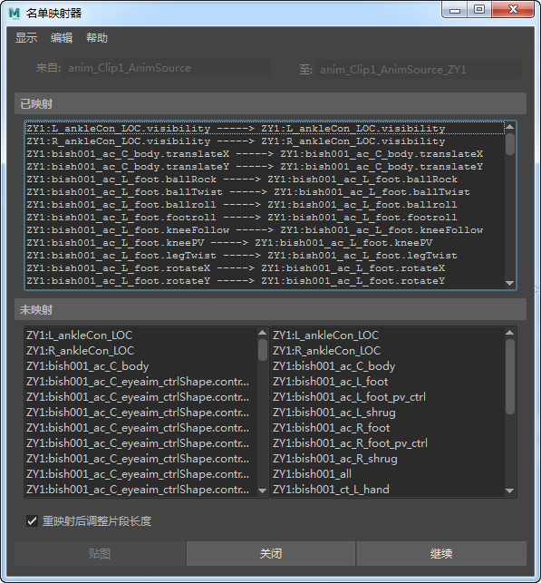

通过将动画源从大纲视图拖动到片段上，可以重映射动画。
通过动画源重映射动画
- 若要使新的动画源起作用，请确保场景中存在骨架或装备。
- 在时间编辑器菜单栏中，选择。此时将显示场景中的动画源列表。
注： 如果场景不包含任何动画源，则您必须添加一些动画源。请参见
时间编辑器动画源主题中的
创建动画源。
- 选择动画源。也可以在大纲视图中展开 timeEditor 来查看场景中的所有动画源。
- 使用鼠标中键将要共享的动画源拖动到已在驱动角色的片段上。
将出现
“名单映射器”(Roster Mapper)，显示要映射的内容。请参见
名单映射器。

- 激活“重映射后调整片段长度”(Adjust Clip Length After Remapping)，将新的动画片段修剪成动画的长度。单击“继续”(Continue)